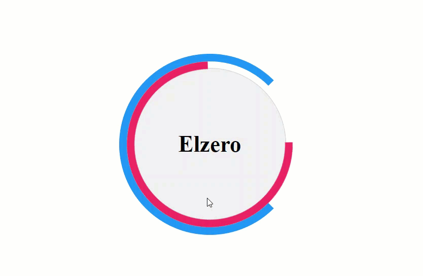

HTML مأخوذ من المعاينة المحلية
<section class="task"><h2>Task 03 — hover to rotate</h2><div class="stage"><div class="ring">Elzero</div></div></section>ELZERO · CSS ASSIGNMENT 03
المطلوب والحل والفكرة ومعاني الرموز وشرح الأسطر في صفحة مستقلة.
<section class="task"><h2>Task 03 — hover to rotate</h2><div class="stage"><div class="ring">Elzero</div></div></section>استخدم شكل التكليف السابق. عند تمرير المؤشر فوق الشكل، أدر الأقواس بمدة نصف ثانية كما في الفيديو التوضيحي.
صورة السؤال:

تستخدم المقارنة البنية الواردة في السؤال أو معاينة المجموعة المحفوظة. راجع نص المطلوب للتحقق من القيم المحددة.
CSS
.ring::before,
.ring::after {
transition: transform .5s;
}
.ring:hover::before { transform: rotate(360deg); }
.ring:hover::after { transform: rotate(-360deg); }تضيف transition مدة 0.5 ثانية، وتدير القوسين باتجاهين متعاكسين عند :hover. الكود يطبق حركة اللف الظاهرة في GIF المرجعي؛ وتظل طبقة النص ثابتة في المنتصف.
.ring::afterينشئ عنصرًا زائفًا لتنسيقه من دون إضافة وسم جديد إلى HTML.
transitionتجعل تغير الخاصية تدريجيًا. مثال القيمة: transform .5s
rotate()تدير العنصر بالزاوية المحددة.
rotate()تدير العنصر بالزاوية المحددة.
sثانية.
degدرجة زاوية.
{يفتح مجموعة التصريحات.
}يغلق مجموعة التصريحات.
:يفصل الخاصية عن القيمة.
;ينهي تصريح CSS.
,يفصل بين محددات أو قيم.
CSS
.ring::before,
.ring::after {
transition: transform .5s;
}
.ring:hover::before { transform: rotate(360deg); }
.ring:hover::after { transform: rotate(-360deg); }الكود الكامل ثابت في العمود الأيسر أثناء التمرير، وكل سطر مشروح على حدة.
.ring::before,ينشئ عنصرًا زائفًا لتنسيقه من دون إضافة وسم جديد إلى HTML.
.ring::after {ينشئ عنصرًا زائفًا لتنسيقه من دون إضافة وسم جديد إلى HTML.
transition: transform .5s;تجعل تغير الخاصية تدريجيًا. والقيمة هنا transform .5s.
}يغلق نطاق القاعدة التي بدأها المحدد.
.ring:hover::before { transform: rotate(360deg); }ينشئ عنصرًا زائفًا لتنسيقه من دون إضافة وسم جديد إلى HTML. ويجمع السطر خصائص transform.
.ring:hover::after { transform: rotate(-360deg); }ينشئ عنصرًا زائفًا لتنسيقه من دون إضافة وسم جديد إلى HTML. ويجمع السطر خصائص transform.